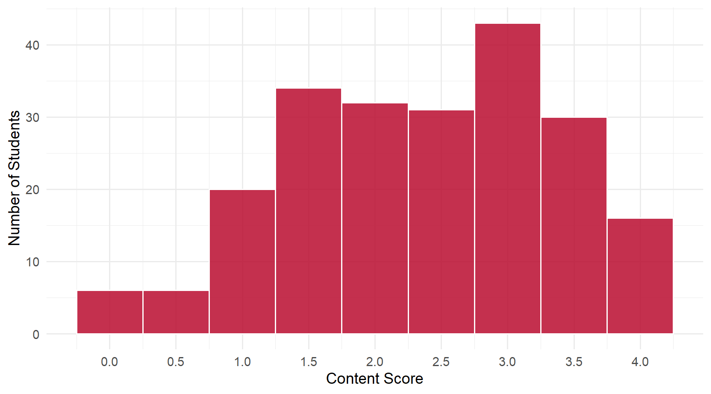
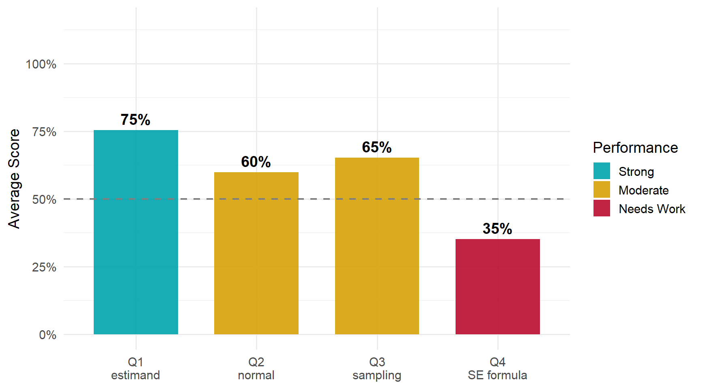

2 Daily 07 — Sep 10
2.1 Class Performance
Students: 218 | Content mean: 2.36 / 4 | Median: 2.5 | SD: 1.01 | Mean daily score: 9.18 / 10
Content scores ranged from 0 to 4 out of 4. (Your daily score adds the 8-point attendance credit for submitting; each question is worth 0.5 of the remaining 2 points.)
This daily was about the sampling distribution: what a good estimator homes in on, what shape its sampling distribution takes, and how we measure that distribution’s spread. The most useful thing on the page is a distinction the class blurred between Q1 and Q2 — two different things that “approach” as the sample grows. Q4, the standard-error formula, was by far the hardest question, and most of its wrong answers stopped partway through a short derivation.
2.2 Score Distribution
2.3 Performance by Question

ImportantThe pattern worth taking from this daily
Q1 and Q2 both say something approaches something as the sample size grows. They are two different statements, and the most common wrong answer on Q2 came from running them together.
- Q1 — the value approaches the estimand. A good estimator’s values pile up closer and closer to the population quantity it is aimed at.
- Q2 — the shape approaches the normal. The sampling distribution of that estimator becomes approximately normal.
The most common wrong answer on Q2 was “population”: the expectation that the sampling distribution comes to look like the population as \(N\) grows. It does not. The sampling distribution is not the distribution of the data at all — it is the distribution of the estimator across many samples. As \(N\) grows it narrows in on the estimand, and its shape turns normal whatever the population looks like. The earnings data from class are strongly skewed; the sampling distribution of their average is still close to normal in a large sample.
2.4 Questions
2.4.1 Q1: Good estimators approach the ___ as sample size increases.
TipCorrect Answer
The estimand — the population quantity the estimator is aimed at. As the sample grows, a good estimator’s values concentrate on it.
WarningCommon Errors
- “Estimate.” The leading wrong answer. An estimate is the number one sample produces — every new sample gives a new one. It is the thing doing the approaching, not the thing approached. The words look alike; the ideas are opposite ends of the process.
- “Sample mean” or “sample average.” That is the estimator itself, which is again the thing doing the approaching. “Mean” or “average” on its own names a statistic without saying whose.
- Close, but not the course’s term — these earned half credit: “parameter,” “true parameter,” “population parameter,” “true value,” and “population” on its own. Many students also wrote “population mean” (or “true mean,” or \(\mu\)). That is exactly right for the sample mean — but the question is about good estimators in general, and the population mean is the target of only one of them. The general name for whatever an estimator is aimed at is the estimand.
- An answer that belongs in another blank — “normal distribution,” “standard error.”
Misspellings of estimand were common and cost nothing. Several students wrote “estimate” or “population mean,” crossed it out, and wrote “estimand” — the right correction.
2.4.2 Q2: Good estimators have sampling distributions that approach the ___ distribution.
TipCorrect Answer
The normal distribution. As the sample grows, the sampling distribution of a good estimator becomes approximately normal — regardless of the shape of the population the data came from.
WarningCommon Errors
- “Population.” By far the most common wrong answer. See the callout above: the sampling distribution approaches a normal shape, not the population’s shape.
- “Sampling” or “sample.” This repeats the kind of distribution named in the question instead of saying what shape it takes.
- Words that are not a distribution — “mean,” “average,” “true value,” “variance,” “standard error.”
- “Log normal,” or normal with a lognormal qualifier. This carries over the skewed earnings population from class. The population can be lognormal; the sampling distribution of its average still approaches a normal.
- “Standard normal.” Right family, and it earned half credit — but the sampling distribution approaches a normal centered on the estimand with its own spread. It is standard normal only after you standardize it.
“Approximately normal,” “bell-shaped,” and “Gaussian” were all accepted.
2.4.3 Q3: The standard error is the square root of the estimated variance of its ___ distribution.
TipCorrect Answer
Its sampling distribution — the distribution of the estimator’s values across repeated samples.
WarningCommon Errors
- “Sample” or “sample distribution.” The most common partial answer, and it earned half credit. It is a small slip on paper and a large one in meaning:
- the sample distribution is how the data are spread within one sample;
- the sampling distribution is how the estimator is spread across many samples.
- “Estimator,” “sample mean,” or \(\bar{Y}\). These name the statistic rather than the distribution of that statistic.
- Another blank’s answer — “normal,” “population.”
A few students hedged with “sample/sampling,” which earned half credit.
2.4.4 Q4: Write the formula for the standard error of the sample average, in terms of the sample variance and \(N\).
TipCorrect Answer
\[\text{se}(\bar{Y}) \;=\; \sqrt{\frac{\widehat{\text{var}}(Y)}{N}} \;=\; \sqrt{\frac{s^2}{N}} \;=\; \frac{s}{\sqrt{N}}\]
For a random sample, averaging \(N\) observations shrinks the variance by a factor of \(N\): \(\text{var}(\bar{Y}) = \text{var}(Y)/N\). The standard error is the square root of that, with the sample variance \(s^2\) standing in for the unknown \(\text{var}(Y)\).
WarningCommon Errors
- Stopping at the sample variance — \(s^2 = \frac{1}{N-1}\sum (Y_i - \bar{Y})^2\), or its square root \(s\). That is the spread of the data, \(Y\). The standard error is about the spread of the average, \(\bar{Y}\), and dividing by \(N\) is the step that turns one into the other.
- The definition without the formula — \(\text{se} = \sqrt{\widehat{\text{var}}(\bar{Y})}\). This is correct, and it earned half credit: it is Q3’s sentence written in symbols. But the question asked for the formula in terms of the sample variance and \(N\), which means carrying out the substitution \(\widehat{\text{var}}(\bar{Y}) = s^2/N\).
- The variance, with no square root — \(s^2/N\), or \(\sigma^2/N\). The variance of the average, correctly derived — but the standard error is its square root. (\(s^2/N\) and \(\sigma^2/N\) both earned half credit. The unsimplified \(\text{var}\!\left(\frac{1}{N}\sum Y_i\right)\) did not.)
- The population \(\sigma\) in place of the sample \(s\) — \(\sigma/\sqrt{N}\). The structure is right, and it earned half credit, but \(\sigma\) is the population standard deviation, which you do not know. A standard error is built from what the sample gives you.
- Pieces in the wrong places — \(s/N\) (the root taken over the variance only), a variance divided by \(\sqrt{N}\), or \(N-1\) in place of \(N\).
- A different formula — a confidence interval, \(\bar{Y} \pm 1.96\,s/\sqrt{N}\), or a \(t\)-statistic. Both contain the standard error; neither is it.
ImportantWorth Your Attention
The standard error of the average is a four-step climb, and most wrong answers stopped on one of the steps:
| Step | You have | What it measures |
|---|---|---|
| 1 | \(s^2\) | how spread out the data are |
| 2 | \(s^2/N\) | how spread out the average is, as a variance |
| 3 | \(\sqrt{s^2/N}\) | the same thing, back in the units of \(Y\) |
| 4 | \(s/\sqrt{N}\) | the standard error, in its usual form |
Stopping at step 1 confuses the data with the average. Stopping at step 2 leaves you with a variance. Writing the definition, \(\sqrt{\widehat{\text{var}}(\bar{Y})}\), names the destination without making the climb. And using \(\sigma\) instead of \(s\) builds the right shape out of a number you do not have.
The single idea that makes it all work is step 2: averaging \(N\) observations divides the variance by \(N\). That is why larger samples give more precise estimates — and it is what the \(\sqrt{N}\) in the denominator is doing.
2.5 What the Class Did Well
The estimand is sticking. Most of the class wrote it on Q1 — this is the third daily in which it has come up — and several students caught themselves writing “estimate” or “population mean” and corrected it on the page.
The students who derived Q4 got there. Correct standard-error formulas most often appeared as the last line of a short chain that started from the sample variance. Working the steps, rather than recalling the final line, is what carried those answers.
2.6 What to Review
- Two things approach as \(N\) grows. The estimator’s value approaches the estimand. Its sampling distribution’s shape approaches the normal. Neither one approaches the population distribution.
- Sample versus sampling. The sample distribution describes the data within one sample; the sampling distribution describes the estimator across many samples. The standard error belongs to the second.
- The four-step climb. \(s^2 \rightarrow s^2/N \rightarrow \sqrt{s^2/N} = s/\sqrt{N}\). Know what each step measures.
- \(s\), not \(\sigma\). A standard error is computed from the sample.
- Estimate versus estimand. An estimate is what one sample gives you; the estimand is what every sample is aiming at.
NoteHow this was graded
Every paper was scored twice, independently, against the same published rubric, by graders who could not see each other’s scores or your name. The two passes agreed on 97% of all scores; every disagreement was reviewed a third time against the rubric and settled with a written reason. Submitting the daily earns 8 of 10 regardless of content.